Jasmine
Group project | 2023
Jasmine is an innovative in-car HMI project aimed at establishing
trust between drivers and level 3 autonomous vehicles. We created
rearview-mirror accessories with natural movements and sound cues,
allowing drivers to notice changes in handover probability.
As semi-autonomous vehicles can't always maintain control, our goal is to alert drivers about shifts in handover likelihood, enhancing their awareness. Through realistic movements and friendly voices, our designs help drivers comprehend upcoming situations.
The Jasmine project is a two-month collaboration between ID KAIST (Department of Industrial Design, KAIST) and IIS (Institute of Industrial Science, the University of Tokyo).
As semi-autonomous vehicles can't always maintain control, our goal is to alert drivers about shifts in handover likelihood, enhancing their awareness. Through realistic movements and friendly voices, our designs help drivers comprehend upcoming situations.
The Jasmine project is a two-month collaboration between ID KAIST (Department of Industrial Design, KAIST) and IIS (Institute of Industrial Science, the University of Tokyo).


 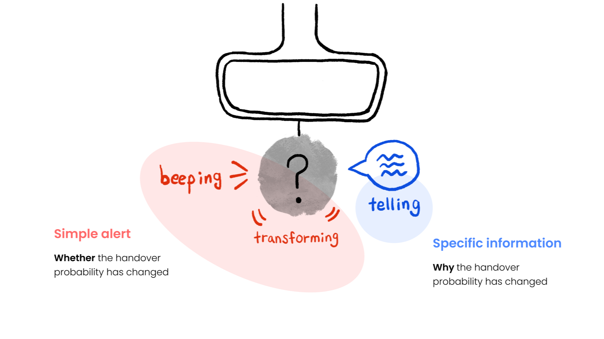
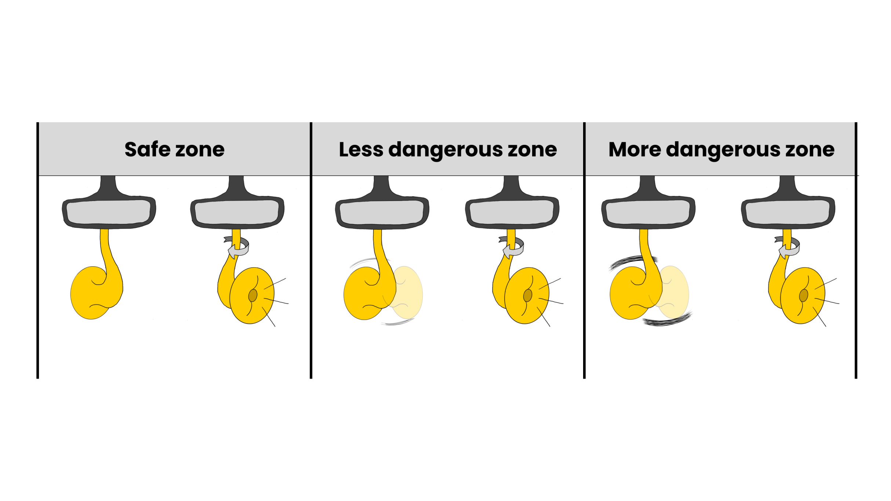
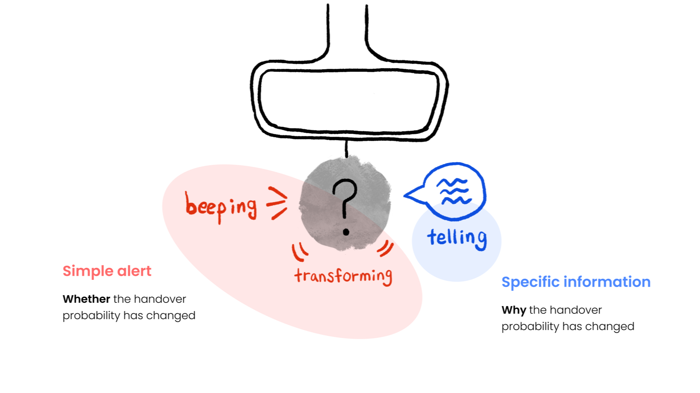
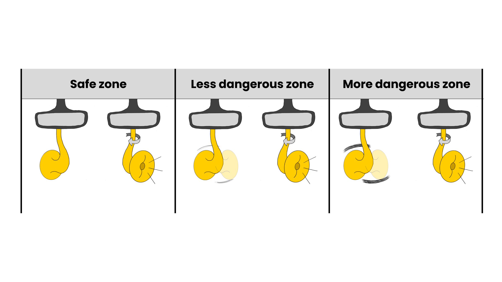
Among the myriad options within the realm of in-car HMI, we embarked
on an exploration of tangible enhancements suspended from the rearview
mirror. Initially, these accessories lacked auditory capabilities;
however, user testing illuminated a distinct preference among drivers
for them to audibly communicate specific information about alterations
in handover likelihood.
Following a series of swift iterations featuring diverse concepts, a consensus was reached to integrate organic motions that allow drivers to instinctively comprehend the notifications. Ultimately, the design crystallized into the form of lips and a trumpet, evoking an appearance suggestive of sound emission.
Following a series of swift iterations featuring diverse concepts, a consensus was reached to integrate organic motions that allow drivers to instinctively comprehend the notifications. Ultimately, the design crystallized into the form of lips and a trumpet, evoking an appearance suggestive of sound emission.
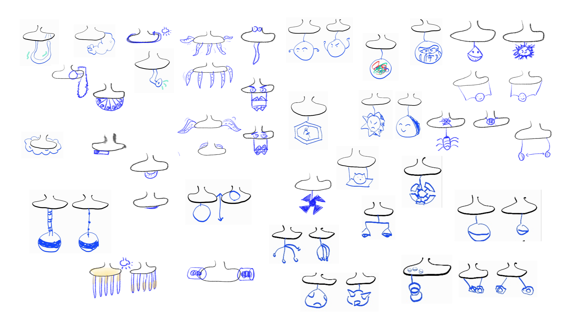
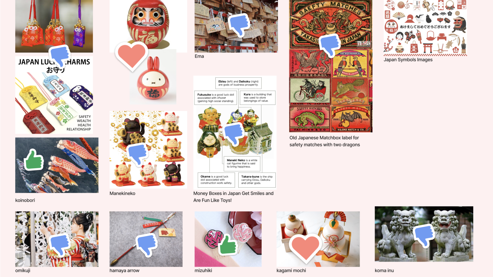
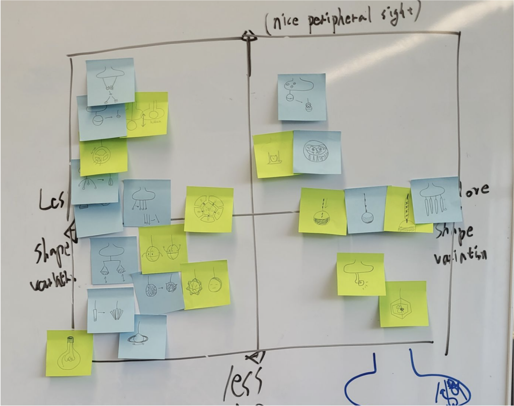
 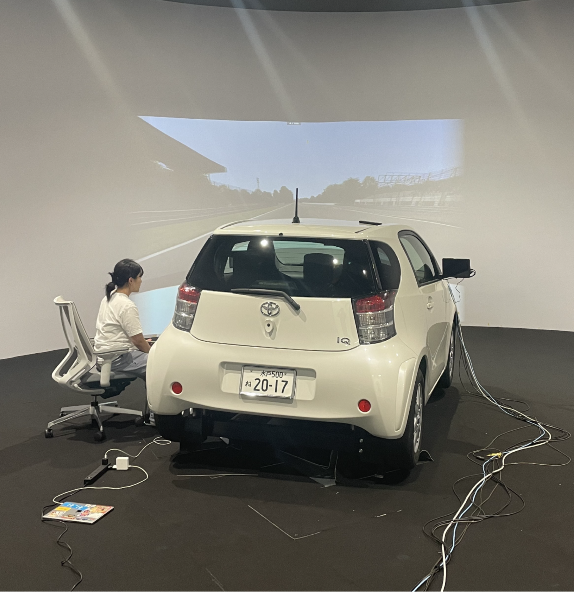
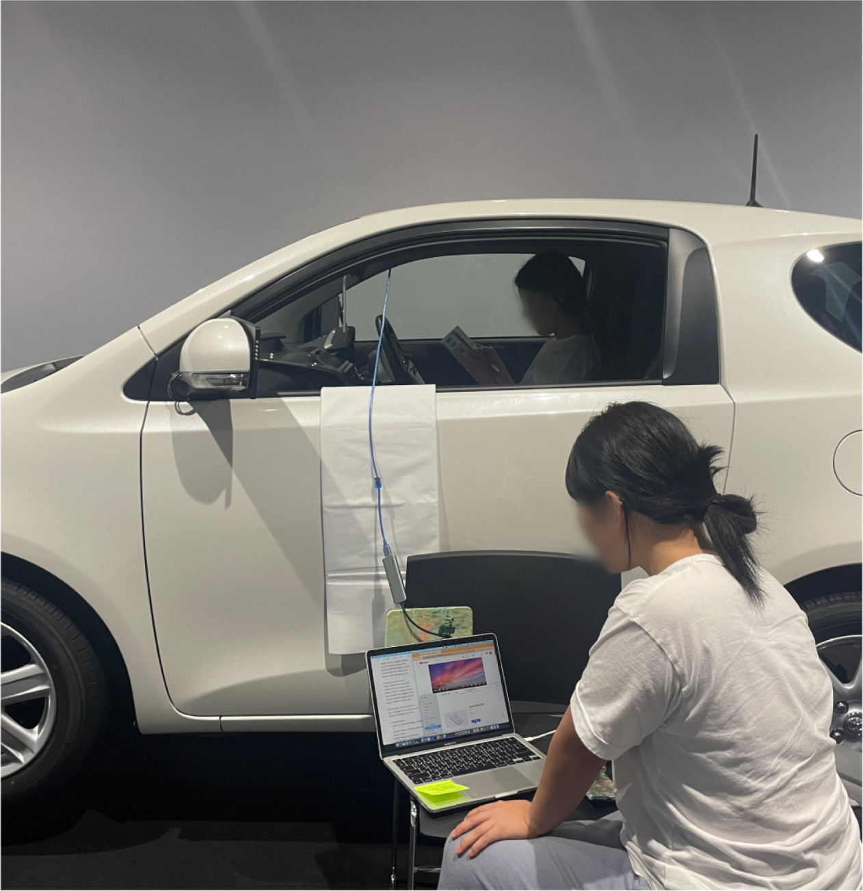
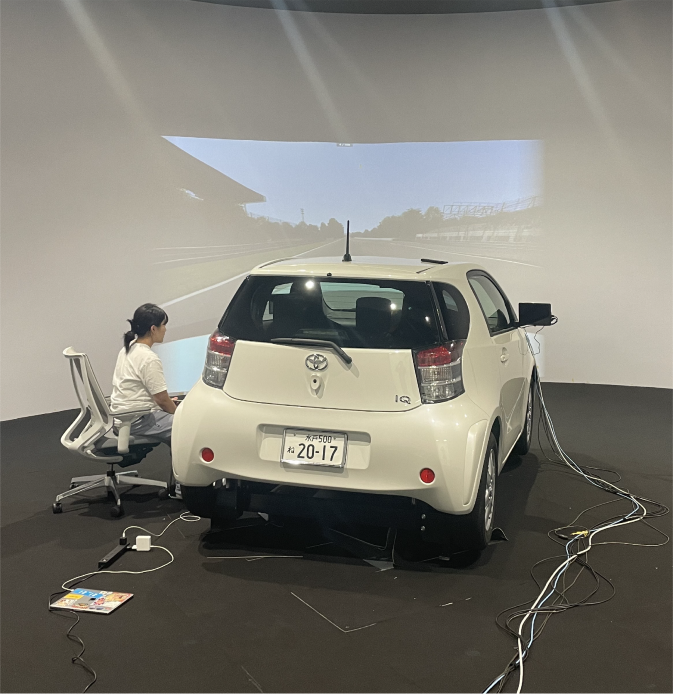
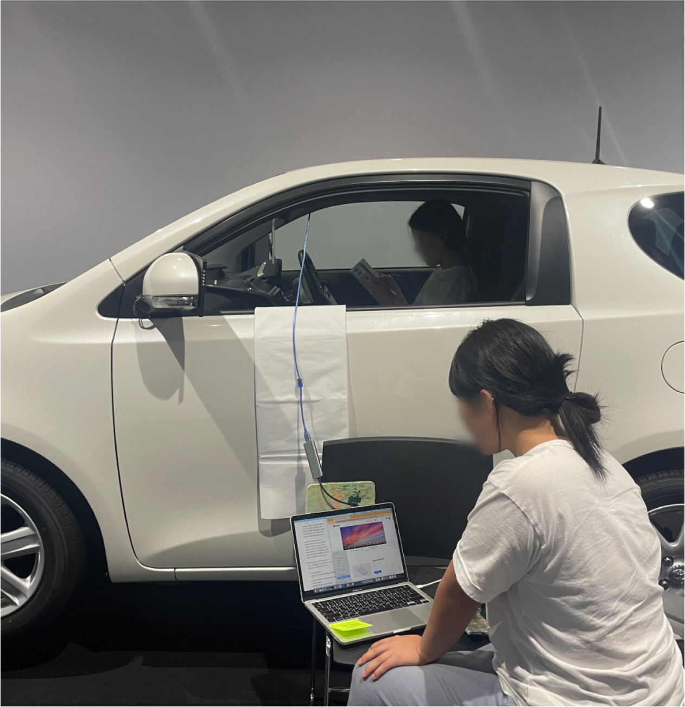


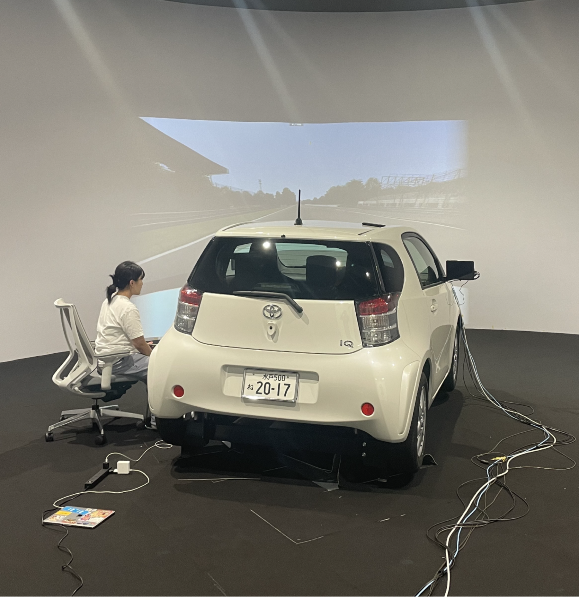
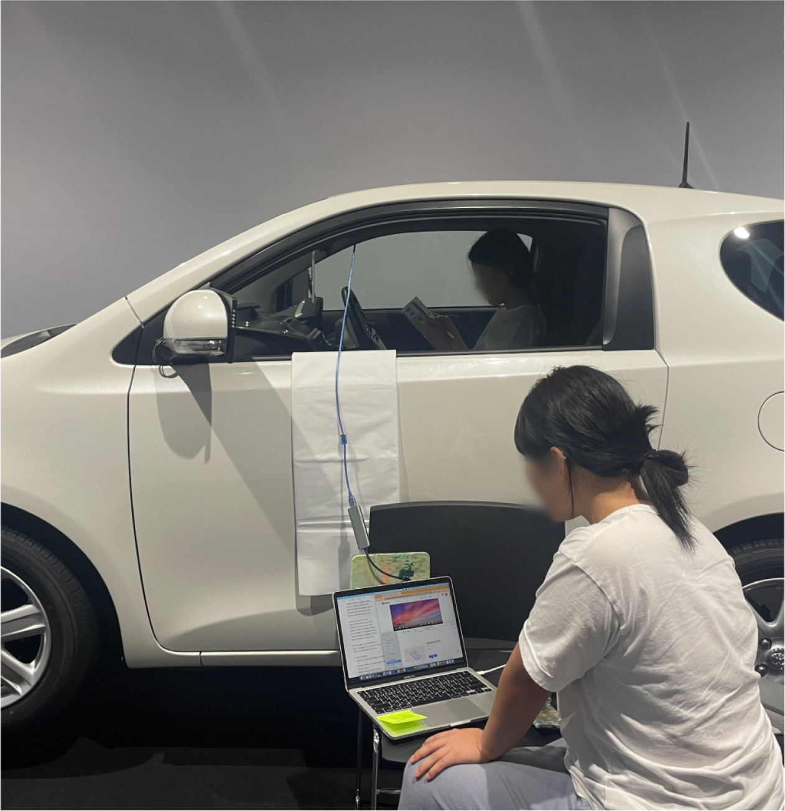